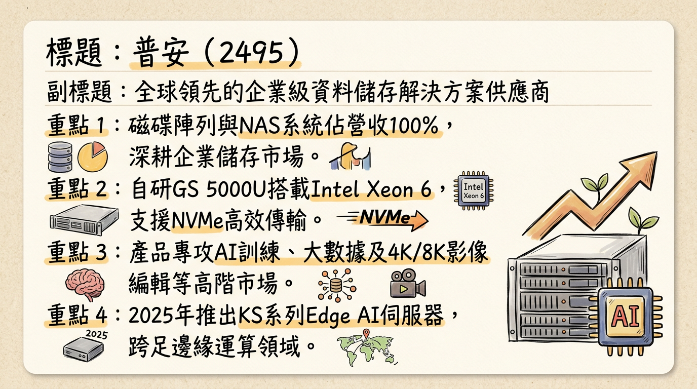
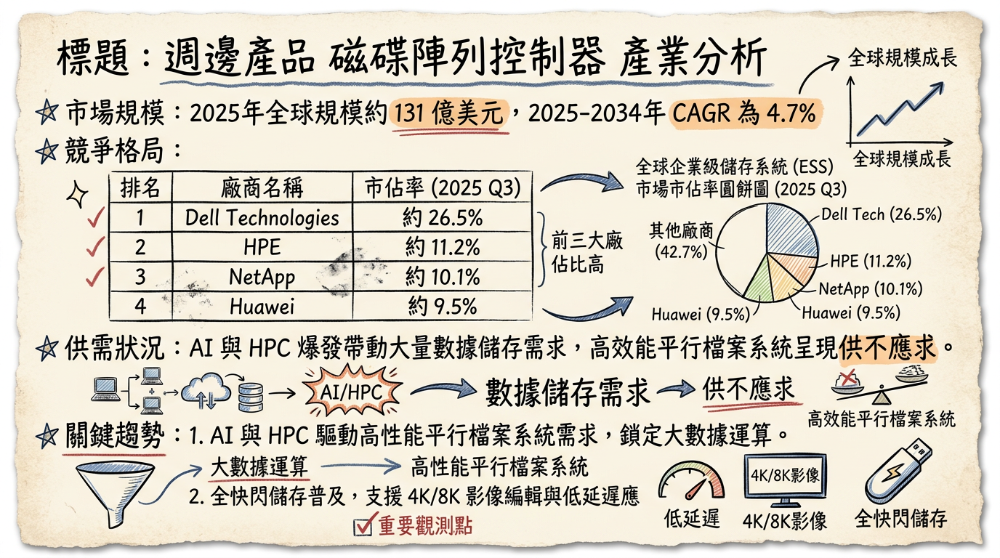
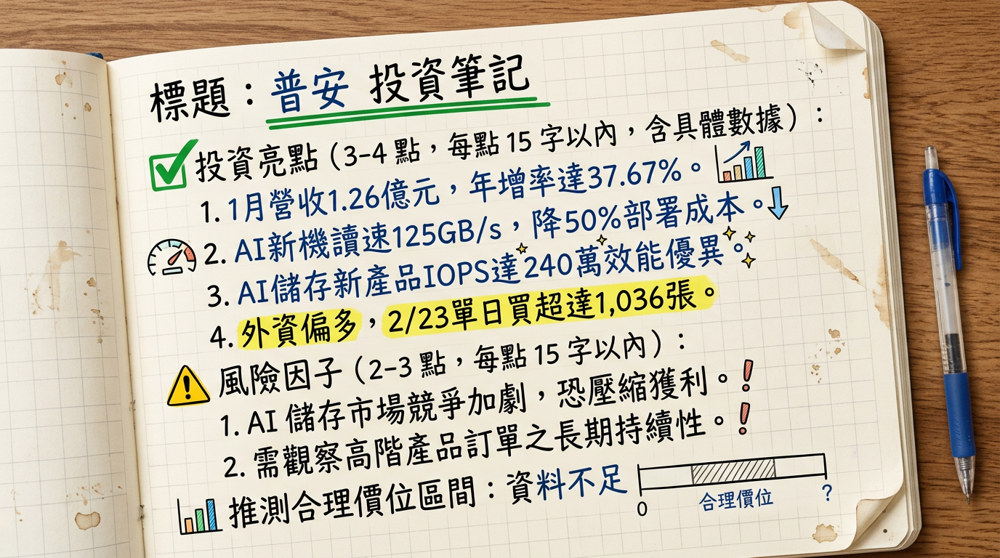

2495 普安 深度研究報告
一句話摘要
普安正處於從傳統存儲向 AI 邊緣運算與高效能儲存（HPC） 轉型的關鍵陣痛期，2026 年 1 月營收年增 37.67% 釋出強烈轉機訊號，需觀察本業獲利能力是否隨新產品放量而回升。
公司概覽
普安科技（Infortrend）為全球企業級資料儲存解決方案領導廠商，採「台灣研發、台灣製造」策略，產品線涵蓋硬體、韌體至雲端平台。
營收結構與產品線 (2025)
| 業務項目 | 營收佔比 | 核心產品 / 說明 |
|---|
| 磁碟陣列與儲存軟硬體 | ~95% | EonStor GS 系列 (旗艦 NVMe)、GSx 系列 (平行檔案系統) |
| 服務與周邊組件 | ~5% | 維護服務、私有雲平台 (IEC) |
| 主要市場 | - | 歐洲、美國、亞太區 (台灣內銷佔比較低) |
核心競爭優勢
完全自主研發韌體： 擁有韌體與平行檔案系統（GSx）開發能力，單一節點讀取速度可達 43 GB/s，效能足以與國際大廠 NetApp 競爭。
高性價比卡位中階市場： 在 SMB 與特定 AI 應用（醫療、影音剪輯）中，提供優於 Dell/HP 的成本優勢且無複雜授權費。
邊緣 AI 佈局： 推出 KS 系列 Edge AI Server，整合 Kubernetes 支援雲原生應用，解決資料從邊緣到核心的傳輸瓶頸。
財務分析
普安 2025 年營收受全球景氣影響衰退 10.89%，但 2026 年初開始出現顯著反彈。
月營收趨勢表
| 月份 | 營收金額 (仟元) | 月增率 (MoM) | 年增率 (YoY) | 備註 |
|---|
| 2026/01 | 125,674 | +3.58% | +37.67% | 創 13 個月新高 |
| 2025/12 | 121,327 | +7.62% | -6.68% | - |
| 2025/11 | 112,731 | +3.51% | -0.74% | - |
| 2025/10 | 108,905 | -9.64% | +8.22% | - |
| 2025/09 | 120,528 | +53.84% | +46.05% | 反彈起點 |
| 2025/08 | 78,345 | -14.10% | -27.64% | ⚠️ 營運低谷 |
- 2024 年度： 營收 13.2 億元，EPS 2.22 元。
- 2025 年度： 營收 11.76 億元，前三季累計 EPS 0.45 元 (本業獲利低，受業外挹注)。
法說會重點 (2025/11/26)
- 新技術導向： 全面導入 Intel Xeon 6 CPU，GS 5000U 效能較前代提升 2 倍。
- 產品策略： 針對 4K/8K 影音剪輯市場，單台設備可支撐 40 位剪輯師同時作業。
- 組織重整： 完成英國與德國子公司重整，旨在提升 2026 年歐洲市場獲利效率。
- 管理層 Guidance： 未提供 2026 具體財測，但強調 AI 高階產品線（GS U.2 系列）將是毛利回升的關鍵。
券商觀點
目前市場對於普安覆蓋率極低，缺乏最新正式報告。
| 券商名 | 目標價 | 評等 | 日期 | 備註 |
|---|
| 某本土投顧 | ⚠️過時 | ⚠️過時 | 2025/08 | 2025/09 後無更新報告 |
| 市場普遍預估 | 1.2 - 1.5 (2026 EPS) | 觀望/轉機 | 2026/03 | 取決於營業利益率回升 |
財報深度分析
利潤率趨勢表
| 期間 | 毛利率 (%) | 營業利益率 (%) | 稅後淨利率 (%) | 單季 EPS (元) |
|---|
| 2025 Q3 | 39.52 | 0.61 | 70.01 | 0.74 |
| 2025 Q2 | 43.77 | 4.25 | -62.75 | -0.62 |
| 2025 Q1 | 45.89 | 5.74 | 32.00 | 0.32 |
| 2024 Q4 | 49.21 | 13.30 | 41.45 | 0.52 |
- 異常分析： 2025 Q3 淨利率高達 70% 係因 2.25 億元股利收入（業外），本業營業利益率 0.61% 處於極低水平。
- 存貨分析： 2025 Q3 存貨週轉天數 239.48 天，雖高但呈下降趨勢。
- 資本支出： 2025 Q3 僅約 10 萬元，顯示公司為輕資產研發導向。
股權異動
- 董監持股： 董事長羅仕東持股 38,973 張 (14.25%)，質押率 0%，股權結構穩定。
- 申報轉讓： 近一年無重大賣出紀錄。
- 股利政策： 2025 年配發 1.3 元現金；2026 年因 2025 本業獲利縮水，配息金額預期將下修。
產業分析
全球外部儲存系統市佔 (2025 Q3)
| 排名 | 公司名稱 | 市佔率 | 核心競爭點 |
|---|
| 1 | Dell Tech | ~27% | 全球通路優勢 |
| 2 | NetApp | ~19% | 混合雲整合 |
| 3 | HPE | ~13% | 伺服器一站式服務 |
| 其他 | 普安 (2495) | <1% | 利基型 AI 存儲與 HPC |
台灣同業比較 (2025)
| 股票代號 | 營收規模 (億) | 毛利率 (Q3) | EPS (Q1-Q3) |
|---|
| 普安 (2495) | 11.76 | 43.0% (前三季平均) | 0.45 |
| 喬鼎 (3057) | ~5-6 | 35-38% | ⚠️ 虧損 |
近期催化劑
* 2026/02/24 發布
EonStor GS 5024U 旗艦機，讀取達 125 GB/s。
* 2026/01 營收強勁增長 (+37.67% YoY)。
* NAND Flash 進入漲價循環，存貨具備跌價損失撥回潛力。
* 2026 Q1 儲存晶片成本預計季增 85~90%，恐侵蝕毛利。
* 本業獲利穩定性不足，高度依賴業外股利挹注。
⭐ 成長動能時間軸
- 2025/Q4： 推出 IEC 私有雲平台，卡位製造業 AI 模型部署。
- 2026/01： 營收 1.26 億元，確認營運動能回歸。
- 2026/02/24： GS 5024U 旗艦級 AI 存儲正式發表。
- 2026/Q1 底： 預計切入 HPC 研究機構與智慧醫療 大型專案。
- 2026/Q2： KS 3000U 系列 AI 邊緣伺服器擴大東南亞與歐洲出貨。
2026 展望
- 成長動能： AI 模型訓練導致資料量幾何倍增，NVMe SSD 儲存成為剛性需求；普安 GSx 系列有望從 Dell/NetApp 手中取得部分高性價比轉單。
- 風險： 全球零組件成本飆升；若 2026 年營業利益率（Operating Margin）無法回升至 10% 以上，獲利將缺乏支撐。
投資結論
本業轉機確認： 2026 年 1 月營收強增是重要訊號，顯示 AI 新產品線已開始貢獻。
品質隱憂： 2025 年獲利結構不佳（靠業外），投資人應關注即將公布的 2025 Q4 營業利益是否轉正。
評價參考： 若 2026 年 EPS 回升至 1.2 - 1.5 元 預期水位，以歷史本益比 15~20 倍計算。
建議操作： 股價已站上月線呈現多頭排列，外資近期積極買超。建議於 28 - 32 元 區間尋求佈局，目標價可上望 38 - 42 元（前提為毛利率回升至 45% 以上）。
本報告由 AI 自動產生，資料來源為公開網路資訊，僅供參考，不構成投資建議。
產生時間：2026-03-04 08:06
📊 資訊卡


